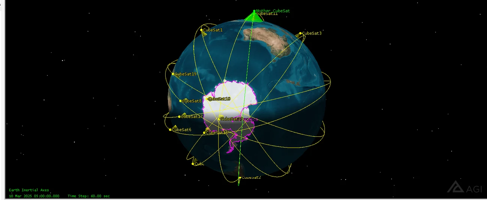
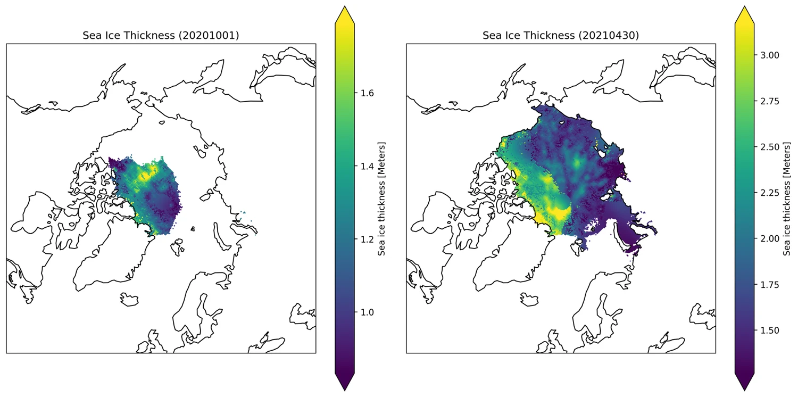
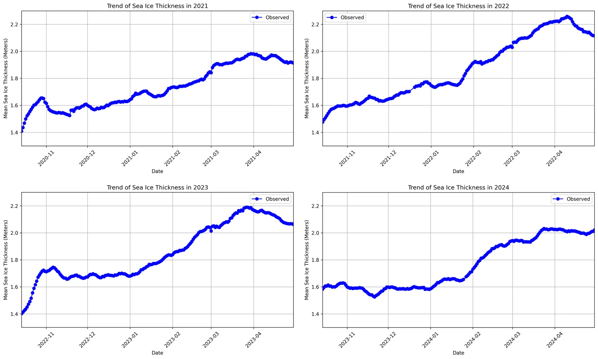

A CubeSat constellation designed to watch polar ice — twenty observers in ten planes, a relay above them, and four years of real satellite data run through the pipeline it would feed.

Most of the interesting questions in a small-satellite mission are decided before anything is built. How many spacecraft, in how many planes, at what inclination, carrying what sensor, revisiting how often — and can a 3U CubeSat actually carry the instrument the science needs?
This study answers those for a polar ice mission, then does something the answer sheet does not require: it takes four years of real CryoSat-2 retrievals and builds the analysis pipeline the constellation would exist to feed.
Ice answers quickly, and it answers in a place nothing else looks.
Ice responds to temperature over seasons rather than decades, so a satellite can actually watch it change. It is also awkward to observe: the Arctic covers roughly 20 million km² and the Antarctic 14 million, at latitudes a low-inclination orbit barely touches, through months of darkness and cloud. That geography sets every orbit decision that follows.
Twenty observers, and one satellite whose job is listening.
The geometry is a Walker Delta, written 20/10/1: twenty satellites spread evenly across ten orbital planes, with a phasing offset of one between neighbouring planes. Walker patterns exist because the alternative — placing satellites by hand — does not scale, and because even spacing in both plane and phase is what turns a collection of spacecraft into continuous coverage.
Each observer is a 3U CubeSat in a near-circular 500 km orbit at 97.8° inclination, which is retrograde and very nearly polar — the inclination that both carries the ground track over the ice and makes the orbit sun-synchronous, so every pass sees the same local solar time.
Above them sits a mother CubeSat in a sun-synchronous orbit at 700 km, and its role is the one that makes the architecture work. Twenty small spacecraft each downlinking raw imagery would spend their power budget on radio and their passes on ground-station geometry. Instead the observers relay to the mother, which aggregates, pre-processes and prioritises before anything reaches the ground.
A 3U chassis is three litres and a power budget.
The imager is a Gecko, chosen because it fits in 1U and leaves the other two for bus, power and radio. Its 20° field of view gives a 160 km swath from 500 km — wide enough to cross a useful slice of the Arctic in a single pass, narrow enough to keep ground resolution meaningful. Field of view, altitude, swath and revisit time are one coupled decision, and this is the trade that sets the rest.
Optical imaging fails at the poles through polar night and cloud, so the study also sizes synthetic aperture radar, which brings its own illumination. X-band buys resolution, C-band trades some of it for coverage and penetration; both are demonstrated on 3U platforms.
Downlink, not storage, is the binding constraint. An image of solid cloud costs exactly as much to transmit as a clear view of an ice margin and is worth nothing, so the mother CubeSat runs cloud detection and image-quality scoring before deciding what to send. The model is trained on Landsat 8 surface reflectance, where each scene already carries a cloud score — a way to build the training set from an existing mission rather than waiting for your own to fly.
Built on an existing mission, so the pipeline is real.
Rather than stop at the design, the project pulls 873 daily sea-ice thickness grids from the NSIDC CryoSat-2 Level-4 product, covering September 2020 to April 2024. Each file is a 448×304 polar stereographic grid at 25 km resolution, carrying thickness, freeboard, snow depth and ice concentration.
Each day is masked for the fill values and rendered onto an orthographic projection of the Arctic. Put the first and last day of a winter beside each other and the season is obvious — a thin patch north of Canada in October becomes a basin-wide sheet by the end of April.

A Flask service sits on top of it. Ask for a date range and it opens every matching grid, masks the invalid cells, reduces each day to a mean thickness, fits a least-squares line through the series, and returns the observations and the trend as JSON for a browser front end to plot.

20/10/1 — 20 satellites, 10 planes, phasing 1Built by a team of seven as MyoSat1. The mission deck is published here with my teammates' names and student numbers removed; the STK simulation video is by Thura Zaw. Sea ice data courtesy of the National Snow and Ice Data Center.